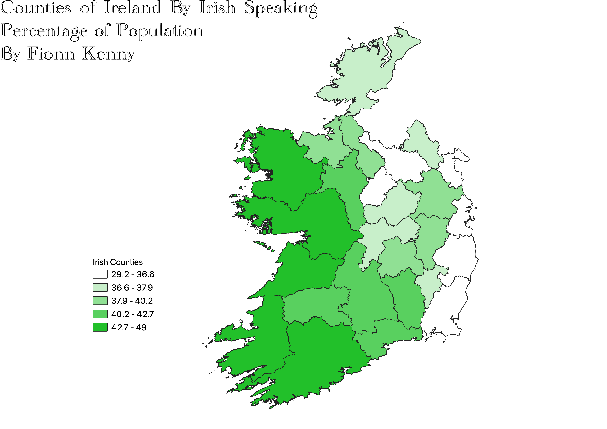

Homework 7: Making a Choropleth
Fionn Kenny

This map shows the counties in Ireland colored by the percentage of
the population that can speak Irish, also known as Gaelige. This map uses the Quantile categorization mode. This was an
area of interest for me because both of my parents immigrated to the United States from Ireland.
Speaking Gaelige was outlawed by the British in the fourteenth century and the use of the language
has been dissapearing since. Although in recent decades the Irish government has made an effort to
teach Gaelige in schools and preserve the language, use in private households is still very low
and it is considered an endangered language.
Data used in this project:
Link to CSV
Link to Vector Data